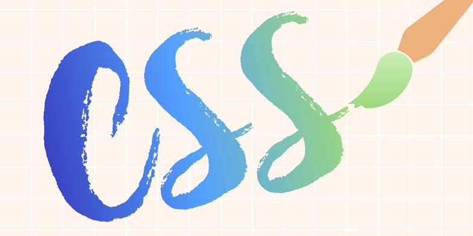

- CSS is a design language used to describe the presentation (e.g. layout, formatting, fonts, colors, etc.)of webpages (e.g., HTML, XML etc.)
- It is used to specify how websites are to be displayed.
- It is developed by Hakon Wium Lie and Bert Bos.

Hakon Wium Lie

Bert Bos
- It improves website presentation.
- Saves time.
- Avoids duplication and Easier to maintain.
- It separates the content of the document and the details of the style.
- CSS Level 1 (CSS 1, W3C Recommendation, December 17, 1996).
- The first official W3C Recommendation for CSS specification.
- CSS Level 2 (CSS 2, W3C Recommendation, May 1998).
- A simple visual formatting model for HTML tags.
- A simple visual formatting model for HTML tags.
- CSS Level 2.1 Revision 1 (CSS 2.1, W3C Recommendation, June 2011).
- Allows users and authors to separate the content and the presentation style of the documents.
- CSS Level 3
- Modular approach to CSS development(as opposed to the monolithic specification of CSS 2.1)
- Sources of styles for HTML documents
- Author Styles
☛external (a.k.a linked) stylesheets (recommended)-
☞These stylesheet doesn't contain any html tags and it should be saved with the .css extension.
☞It can be applied to many pages
☛Inline styles - User Styles
☛Some browsers provide (non-standard)alternatives through plugins extensions (e.g., Stylish) - User Agent Styles
☛Default styles from CSS 2.1. that browsers try to web pages.
- Author Styles
- Selector - used to select the HTML element to style.
- Declaration Block - contains one or more declaration that has CSS property and value.
- Property - an attribute of HTML tag. HTML attributes are converted into CSS properties.
- Value - assigned to properties.

- CSS Comments - Comments are used to explain your code. A CSS comment begins with "/*" and ends with "*/".

- Selector - is an HTML tag wherein it is used in CSS rule to determine which style will be applied.
- Selector Syntax - chain of one or more sequences of simple selectors separated by combinators, with one pseudo-element, possibly appended to the last sequence and always start with type selector and universal selector.
- Selector Group - comma-separated list of selectors representing the union of all elements selected by each of the selectors in the list.
- SIMPLE SELECTOR
- Type selectors
- ID selectors
- Class selectors
- Universal selectors
- Attribute selectors
- [attribute=value] - Selects all elements with target="_blank"
- [attribute~=value] - Selects all elements with a title attribute containing the value you put inside the attribute.
- [attribute !=value] - Select elements that either don't have the specified attribute.
- Pseudo-classes - a keyword added to the end of a selector, which is used to specify the element you want to style.
- Dynamic pseudo-classes ( e.g., :link , :visited )
- User-action pseudo-classes ( e.g., :hover , :active , :focus )
- Target pseudo-classes ( e.g., :target )
- Language pseudo-classes ( e.g., :lang )
- UI element states pseudo-classes ( e.g., :enabled , :disabled , :checked , :indeterminate )
- Structural pseudo-classes ( e.g., :root , :first-child , :last-child , :only-child , :nth-child(), :nth-last-child() , :first-of-type , :last-of-type , :only-of-type , :empty , :nth-of-type() , :nth-last-of-type() )
- Pseudo-elements ( e.g., :first-letter , ::first-letter , :before , ::before )
- Combinators
- Descendant combinator ( i.e., whitespace , space , tab , line feed , carriage , return , form feed )
- Child combinator (>)
- Sibling combinator
- CSS Rule Precedence - From highest to lowest priority and an HTML element may be the subject of the selectors of multiple style rules.
▹ when such rules target different properties, their effects cascade (i.e., are combined )
▹ when the styles involve the same property, they conflict and must be resolved such that only one style is applied.- By origin and importance
▹user agent important declarations
▹user importance declarations
▹author important declarations
▹author normal declarations
▹user normal declarations
▹user agent normal declarations - By specificity- The higher the priority
▹Inline Style
▹Number of ID selectors
▹Number of class selectors, attribute selectors, pseudo-class
▹Number of type selectors & pseudo-elements - By order - If it comes later, it goes first.
- By origin and importance
- At-rules - used in CSS to convey metadata, descriptive information or other conditional information. It starts with "@" sign followed by an identifier(rule) then a syntax block, ending with a ";" semicolon.
- Metadata
- @charset
- @import
- Descriptive Information
- @font-face
- Conditional Information
- @media
- @document
INSERT SOME EXAMPLE HERE.
- Metadata
- Nested Statements - a subset of at-rule.
- @media - The device which runs the browser matches the expressed condition.
- @supports - The browser supports the tested feature.
- @document - Content page matches some of the conditions.
INSERT SOME EXAMPLE HERE.
- Shorthand Properties
- allows authors set several property value in a single line (e.g., border-width)
- vendor specific extensions (a.k.a. vendor prefixes)
- used by browser vendors as a prefix for the names of experimental or non-standard CSS properties. (e.g., -webkit- , -moz- , -o- , -ms-)
- custom properties a.k.a, CSS variables (experimental). Property names prefixed with "- -", representing a value.
- keywords
- numbers(integers & reals indecimal notation)
- value processing
▹ declared, cascade, specified, computed, used, actual values.
▹ Value types - Keywords (CSS wide keywords (e.g., initial , inherit, unset) , property-specific keywords) - dimensions
▹length, angle, duration, frequency, resolution - length units:
▹font relative: em, ex, ch, rem
▹viewport precentage: vw, vh, vmin, vmax - absolute lengths: cm, mm q, in, pt ,pc ,px
- angle units: deg, grad, rad, turn
▹ used in some gradient and transform functions - duration units: s, ms
▹ used in animation, transition, and related properties - frequency units: hz, khz
▹ usually introduced in CSS2 for the (obsoleted) aural media type: reintroduced in CSS3 but currently unused. - resolution units: dpi, dpem, dppx
- percentages
▹ number with a % suffix
▹ calculated as a percentage of some value (usually taken from the parent-element) - URLs and URIs
▹ URL() function with an absolute or relative (to the stylesheet) URL parameter
▹ denotes a pointer to a resource, such as an image or a font. - colors
▹ color keywords: red, blue, white, etc.
▹ RGB hexadecimal notation: #fff , #f00 , #f00f, etc.
▹ RGB functions: rgb(255,0,0) , HSL functions: hsl(0,100%,50%) or hsla (0,100%,50%,1), Currentcolor: transparent - strings
▹ delimited by single quotes (') or double qoutes(") - functions: calc(), attr(), counter(), counters(), linear-gradient(), radial-gradient(), translate(), scale(), rotate()
- generates CSS using a custom language syntax that typically includes features that don't exist in pure CSS
- provides functionality without having to write CSS.
- Set of codes already provided by other users which other developers can use in developing their website.
- provides predefined CSS design functionality that can be reused, extended, or customized (e.g., bootstrap, materialize, etc.)
- allows users/developers to make use of the features of the browsers.
- provides features that developers expect browsers to provide natively.
▹ E.g., modernizr, selectivizr, etc.